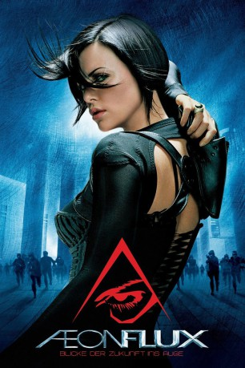

gesehen am 01.07.2015
gesehen am 01.07.2015Alternativ: Æon Flux (Originaltitel) gesehen am 01.07.2015
 
 IMDB-Wertung: 5.5 / 10
IMDB-Wertung: 5.5 / 10  Metascore:
Metascore: 
400 Jahre in der Zukunft, genauer im Jahre 2415, ist Æon Flux eine mysteriöse Attentäterin. Vier Jahrhunderte nach einem Virus, der fast die gesamte menschliche Rasse ausgelöscht hat, leben 5 Millionen Menschen in einer utopischen Stadt genannt Bregna. Æon kämpft um das Goodchild Regime zu vernichten, dass von ihrem Namensvetter und Herrschers von Bregna, Trevor Goodchild angeführt wird. Æon versucht Trevor Goodchild zu töten, doch kurz bevor offenbaren sich weitere Geheimnisse die entdeckt werden müssen und Verschwörungen die vereitelt werden müssen.
Jahr: 2005
Dauer: 93 Minuten
FSK: 12
Land: USA Studio: Paramount PicturesTonspuren:
Untertitel:
Auflösung: 1080p (1920×816) Größe: 6021 MB
Genre: Action, Abenteuer, Drama, Mystery, Sci-Fi, Thriller
Regisseur: Karyn Kusama
Drehbuch: Phil Hay, Matt Manfredi, Peter Chung
Soundtrack: Graeme Revell
Darsteller:
 Charlize Theron als Aeon Flux
Charlize Theron als Aeon Flux Marton Csokas als Trevor Goodchild
Marton Csokas als Trevor Goodchild Jonny Lee Miller als Oren Goodchild
Jonny Lee Miller als Oren Goodchild Frances McDormand als Handler
Frances McDormand als Handler Pete Postlethwaite als Keeper
Pete Postlethwaite als Keeper Nikolai Kinski als Claudius
Nikolai Kinski als Claudius Megan Gay als Weaver
Megan Gay als Weaver Anatole Taubman als Sasha Prillo's Father
Anatole Taubman als Sasha Prillo's Father Narges Rashidi als Pregnant Woman
Narges Rashidi als Pregnant Woman Wolfgang Stegemann als Shock Trooper , uncredited
Wolfgang Stegemann als Shock Trooper , uncredited Stuart Townsend als Monican , uncredited
Stuart Townsend als Monican , uncreditedDatei: X:\2005(A-F)\Aeon Flux (2005, FSK12, 1920x816).mkv seit 13.02.2015
Festplatte: HD 2003-2004-2005(A-F)
 Es gibt insgesamt 49 Filme in der Gruppe '2005(A-F)'
Es gibt insgesamt 49 Filme in der Gruppe '2005(A-F)'